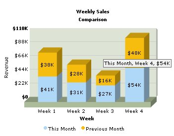

FusionCharts PHP Class API > Creating Stacked Chart |
FusionCharts Free v2 offers Stacked Chart – a type of Multi-series chart where multiple datasets are stacked one above the other in each column. Look at the image below; this is how a Stacked Chart looks like: |
|  |
Before you go further with this page, we recommend you to please see the previous pages "Creating First Chart " & "Creating Multi-series chart" as we start off from concepts explained in that page. |
The process of generating Stacked chart is same as Multi-series chart. The only difference is here we need to specify a different chart type. Open and modify the Mulit-series chart you have created in the previous page thus: |
<?php # Include FusionCharts PHP Class # Create Stacked Column3D chart object using FusionCharts PHP Class
|
As you can see, we have only chaged the chart type to stackedColumn3D while creating the chart object : $FC = new FusionCharts("StackedColumn3D","350","300"); This does the trick and you will see that instead of a multiseries chart we render a stacked chart. |
|
| Please go through FusionCharts PHP Class API Reference section to know more about the functions used in the above code. |
| Here comes the output: |